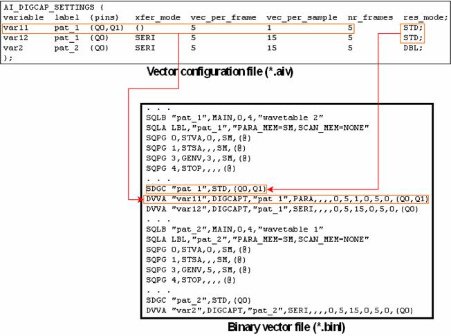

The AI_DIGCAP_SETTINGS section
The AI_DIGCAP_SETTINGS section serves to generate SDGC and DVVA commands in the binary vector file. SDGC defines the resolution mode for digital capture, DVVA defines a vector variable, which serves to filter digital capture results. The section is organized as a table. Every row of the table specifies the parameters of one vector variable (the res_mode column is an exception, see below).
The format of the table may vary. Optional columns can be omitted, and the order of the columns is arbitrary. The actual format of the table is defined in a header row. This row specifies which columns exist and how they are ordered. The columns have fixed names.
Every row must be terminated with a semicolon. Because of this, a row is allowed to extend over more than one line.
The totality of the data rows must be enclosed by a pair of braces ({}). The section as a whole must also be terminated with a semicolon.
It is possible that a cell of the table contains more than one entry. In this case these entries must be enclosed by curly brackets.
The following list explains all the columns of the AI_DIGCAP_SETTINGS section. The columns are ordered alphabetically by their name.
- init_discard (optional): The offset relative to the start location of
a capture block within the capture memory. The vectors before this offset will not be
uploaded.
The default value is 0.
- label (mandatory): specifies the name of a vector label (pattern). The pattern must be of type MAIN. You can define more than one vector variable for the same pattern.
- nr_frames (optional): The number of frames that are to be extracted, starting from the first frame. The default value is 1.
- nr_frames_interdisc (optional): The number of irrelevant vectors between frames. These will be discarded in the extraction process. The default value is 0.
- {pins} (mandatory): List of pins for which the vector variable is
defined. If the list contains more than one element, the element names must be separated with a
comma. The entries belonging to this column must be enclosed by curly brackets in every line
even if only one entry is present.
If you have set the xfer_mode parameter to SERI, specify only one pin.
If you have set xfer_mode to PARA, the LSB of the sample will be assigned to the last pin of the pin list.
- res_mode (optional): This column specifies a parameter for the SDGC command, not for DVVA. The possible values are STD (this is also the default) and DBL. The SDGC commands are derived from analyzing the res_mode, the label, and the pins column for all rows of the table. One SDGC command is created per label for all pins with resolution mode STD, and one SDGC command for all pins with resolution mode DBL (if necessary). If you define more than one vector variable for the same combination of pin and label, make sure that the respective rows have the same resolution mode.
- variable (mandatory): specifies the name of the vector variable. This name must be unique within the table.
- vec_interdisc (optional): Defines the length of irrelevant vector
blocks within a frame. These will be discarded in the extraction process. If set to 2, for
example, only the first and then every third vector will be extracted within a frame.
The default value is 0, in which case no vectors within a frame will be discarded.
- vec_per_frame (mandatory): The number of relevant vectors within a frame.
- vec_per_sample (mandatory): The number of (relevant) vectors that are
contained in one sample. The suitable values for this parameter depend on the selected transfer
mode (xfer_mode parameter).
- For transfer mode PARA, this parameter must be set to 1 (the default value).
- For SERI, the maximum number is 32. The bigger the number is, the faster the upload will be. For example, if one frame contains 5 relevant vectors, you could set nr_vec_per_sample to 30 in order to put 6 frames into one sample.
-
xfer_mode (optional): Optional parameter that determines the transfer
mode. The options available are:
- PARA Parallel. This is the default.
- SERI Serial
Note that you cannot select SERI if the vector variable is associated with more than one pin.
The following figure shows an example:
